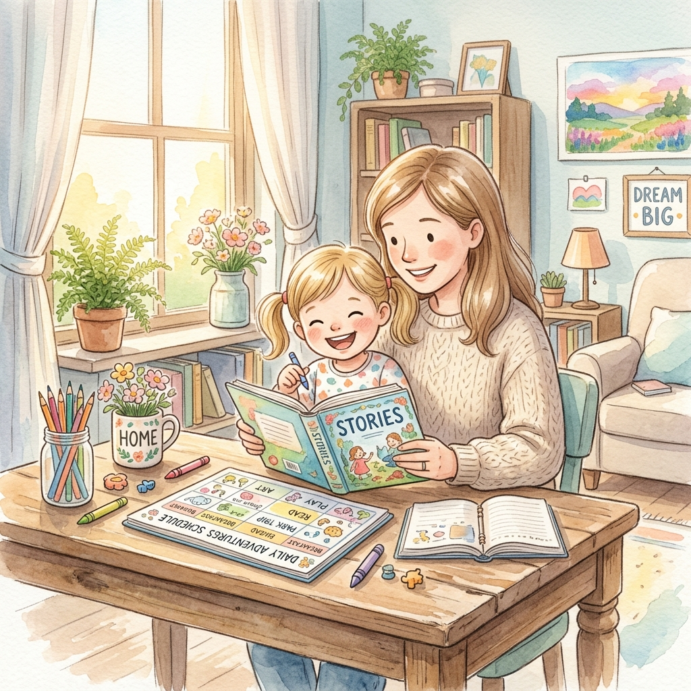

用黃金 60 天，陪伴孩子建立自主管理慣性
四年級是國小學習的分水嶺。課程內容從「具體」走向「抽象」，文章篇幅變長，數學運算步驟增加。這個暑假，讓我們透過「四大微習慣」，溫柔且堅定地為孩子搭起學習的鷹架。

🎯 核心教學目標與重點
建立自我管理慣性
升上四年級，學習不再只是單純被動吸收，更需要自我管理。透過暑假規律的生活步調，陪伴孩子無痛建立自主學習的慣性，有效降低開學後的親師生摩擦與焦慮。
培養四大微習慣
將抽象的「閱讀力、思考力、整理力、時間管理」等進階學習能力，拆解轉化為每日可執行的具體微習慣。進步最快的往往不是最聰明的，而是願意堅持習慣的孩子。
📊 暑假四大微習慣計畫
家長是孩子學習的「引導教練」，透過鷹架提問（Scaffolding）激發思考
每天閱讀 20 分鐘
📋 具體任務（每天做什麼）
每天定時安靜閱讀 20 分鐘，不限題材（適合三升四的橋梁書、少年小說、知識漫畫或科學雜誌皆可）。重點是養成定時安靜閱讀的專注力。
💬 家長引導（鷹架提問）
- 「這本書裡最有趣或最讓你驚訝的一句話/一幕是什麼？」
- 「如果是你，遇到主角這個狀況，你會怎麼解決這個問題？」
💡 三升四關鍵提醒
四年級開始需要面對長文閱讀。此階段應逐漸減少拼音輔助，增加對詞義、段落大意的理解，可引導孩子多讀科普書或世界名著簡短版。
練習筆記（記錄探索本）
📋 具體任務（每天做什麼）
準備一本空白「探索本」。出遊、看紀錄片、閱讀完後，用文字或手繪圖畫，在探索本上記下或畫出 3 個重點，訓練抓取關鍵資訊的能力。
💬 家長引導（鷹架提問）
- 「你能用 3 句話總結今天看到的/學到的事嗎？」
- 「如果我們要幫今天的行程或這本書下一個最帥的標題，你會寫什麼？」
💡 三升四關鍵提醒
不要強求完美的筆記。可以用心智圖、插畫格子、甚至是符號來記錄。四年級開始需要組織零散的知識，記錄探索本是很好的橋樑。
維持計算 5-10 題
📋 具體任務（每天做什麼）
每天完成 5-10 題基礎運算（如三下的小數加減、三位數乘除），重質不重量。嚴格要求「數字對齊、寫出直式、確實驗算」。
💬 家長引導（鷹架提問）
- 「我們來用計時器挑戰，看今天能不能比昨天快 10 秒且全對？」
- 「這一題的直式位置對得好漂亮，你是怎麼想出這個解法的？」
💡 三升四關鍵提醒
四年級數學會大量接觸大數、乘除法進階直式。三升四暑假的關鍵是「確保位置對齊（位數觀念）」與「運算的精準度」，每天算 5 題全對，遠比算 50 題卻錯漏百出更有效。
睡前規劃時間小卡
📋 具體任務（每天做什麼）
每天睡前花 5 分鐘，寫下或畫出「明天要做的 3 件重要事」，並預估每件事需要花幾分鐘。隔天睡前覆盤挑戰結果。
💬 家長引導（鷹架提問）
- 「你覺得明天這件事需要花多少時間完成？包含收拾嗎？」
- 「明天先做這三件的哪一件，後面的時間安排會比較順暢？」
💡 三升四關鍵提醒
孩子一開始的時間預估一定不準確。家長請扮演觀察者，讓孩子體驗「時間沒預估好而導致想玩的時間被壓縮」的自然後果，進而學會自我調整。
💡 專家關鍵提醒：陪伴心法
容錯率重於完美
剛開始孩子一定會抗拒或拖延，這是非常正常的。家長的責任是「陪伴建立規律」，而不是「確保零錯誤」。多肯定他的嘗試與堅持，不糾結於一時的偷懶。
避免過度干涉
時間規劃初期一定不準，請讓孩子體驗「沒估好時間而需承擔的自然後果」（例如：預估 30 分鐘寫完作業，結果花了 1 小時，導致玩樂時間減少），而非家長直接出手碎念、干涉或代勞。
循序漸進不貪多
若孩子一開始無法接受四大任務，請遵循循序漸進原則。可先從最簡單的「每天閱讀」及「時間規劃小卡」兩項開始，建立信心與信任感後，再慢慢增加其他項目。
每日時間規劃小卡
睡前規劃明天的 3 件重要大事，並在隔天進行覆盤
閱讀思考紀錄卡 (5W1H)
每週一篇，用 5W1H 架構幫助孩子結構化地整理故事重點
暑假專屬集點進度條
每完成一日時間規劃或閱讀卡即可集點，兌換親子專屬獎勵！
🖨️ 實體紙本列印中心
我們特別優化了紙張版面，讓您可以直接用家用印表機進行 A4 100% 比例列印。孩子在實體卡片上書寫，更能專注且避免螢幕藍光影響。
- 點擊下方「啟動列印對話框」按鈕。
- 在列印設定中，確認選擇「A4」尺寸，並將邊距設為「無」 (None) 或「預設」。
- 勾選「背景圖形」 (Background graphics) 確保漂亮的卡片框線與顏色能順利印出。